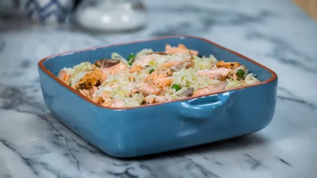

Arroz de Salmão, Funcho e Ervilhas

Arroz de Salmão, Funcho e Ervilhas
Ingredientes
- 4 lombos de salmão
- 200 g de arroz basmati cozido
- 100 g de ervilhas congeladas
- 100 g de alho-francês laminado
- 1/4 bolbo de funcho fresco
- Mistura de pimentas
- Sumo de 1 limão
- Sal
- Azeite
Modo de Preparo
- Tempere os lombos de salmão com sumo de limão, sal, mistura de pimentas e rama de funcho. Grelhe com um fio de azeite e reserve.
- Numa wok com 2 colheres de sopa de azeite, salteie o alho-francês, as ervilhas e o funcho laminado.
- Quando estiverem refogados, acrescente o arroz basmati cozido.
- Lasque o salmão e envolva no arroz, reservando algumas lascas para servir por cima.
- Sirva o arroz, finalize com as lascas de salmão reservadas e regue com umas gotas de limão.